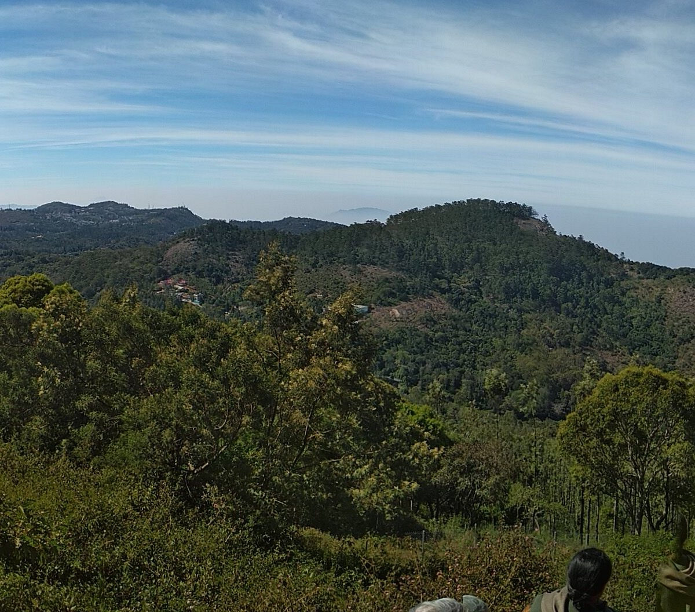
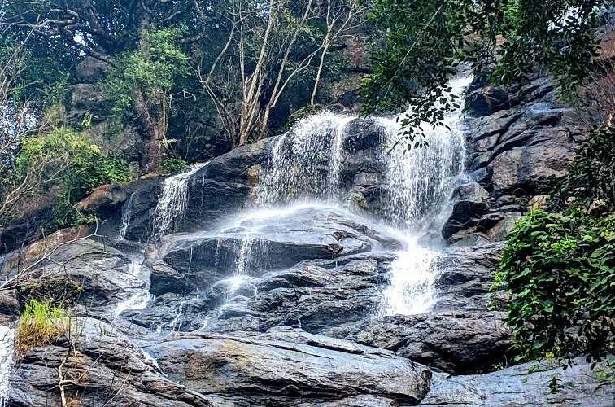
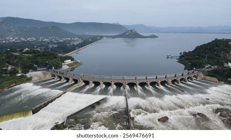

Visit Salem
Discover the steel city where tradition, nature, and flavour come alive.
Top three activities to do at Salem

Yercaud, Shevaroy Hills
A misty hill escape with coffee plantations, a serene lake, and scenic viewpoints — Salem's own cool retreat.

Killiyur Waterfalls
A secluded 300-foot waterfall tucked inside Yercaud forest — best after monsoon, worth every step.

Mettur Dam
India's iconic 1934 Kaveri dam — grand engineering, lush gardens, and a vast reservoir to match.
Your guide
"I was born and raised in Salem and have spent my life exploring its hills, dams, and hidden spots — let me guide you to the best this city has to offer."